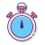
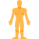

EMOM TIMER
Tips for EMOM exercises
-
1
Take breaks:If you're tired or winded, pause your workout to rest or drink water.
-
2

Maintain a positive mindset: Avoid dwelling on difficulty or anticipating future challenges, and replace negative self-talk with empowering thoughts.
-
3

Identify your resting minute: Many EMOM workouts have a resting minute where you can recover. Stand tall, take deep breaths, and mentally prepare for the next round.
-
4

Focus on form:Proper form can help you avoid injury and get the most out of your exercise.
-
5

Use a variety of movement patterns: Try to use a variety of movement patterns for each routine, such as push, pull, squat, and hinge.
-
6
Start with bodyweight exercises: If you're new to EMOM workouts, bodyweight exercises are best. Adding weights can increase the risk of injury if you're not prepared. As you get more experienced, you can add dumbbells or kettlebells.
-
7
Use a 1:1 work-to-rest ratio: For cardio-based EMOM workouts, try a 1:1 ratio (30 seconds on, 30 seconds off), or close to 2:1 (40 seconds on, 20 seconds off). This is especially important if you're alternating between exercises that use different muscle groups
-
8

Warm up and cool down: To lower your risk of injury, it's important to get your body moving before starting a workout. Try to spend a few minutes engaging in light cardio or dynamic stretches. When your workout is over, take another few minutes to stretch as you cool down.
- Deadlifts
- High Knees
- Burpees
- Emom cindy workout
- Jump Squats
- Push-Ups
- Plank
- Jump Rope
- Box Jumps
- weight-ups
What is EMOM
EMOM workouts are an acronym for every minute on the minute. A form of interval training, the goal with this workout is to complete a certain number of reps of a particular exercise within 60 seconds, and to use whatever time is left in that minute to rest.